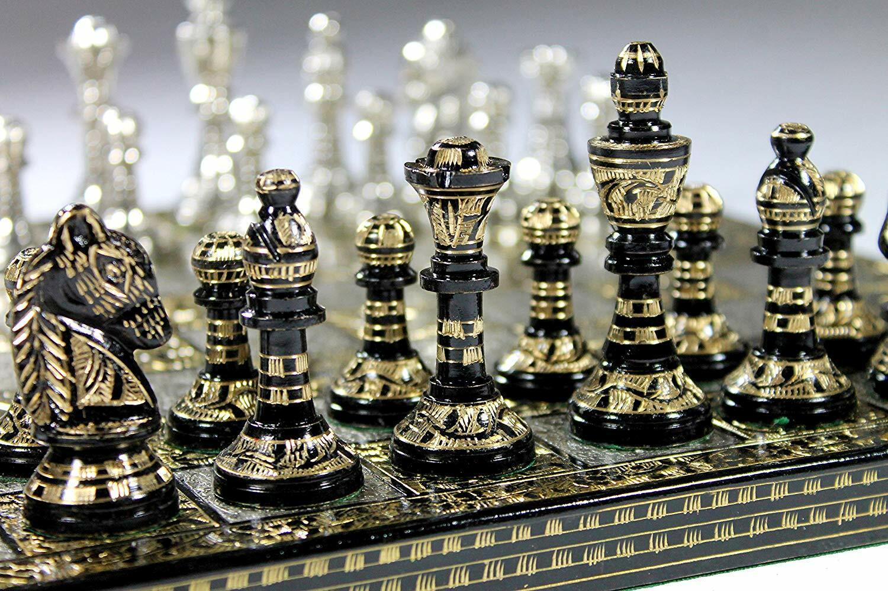

Electronic Chess Set

The idea for this chess set is to have it mimic the gameplay of Chess.com
For example, you could pick up a piece, and the set would glow underneath to show what moves are available.
I've decided the best and cheapest way to go about this is to have a magnet under each of the pieces and magnetic switches inside of the board
I've separated it into two possible versions
Mark 1
- Each piece uses 1 magnet, pieces are determined from computer
- Pros: much simpler, less programming needed
- Cons: depends on computer, everything would probably need to start from normal spots
Mark 2
Each piece uses different magnets to actually distinguish between pieces
Pros: more robust
Cons: more complicated, needs more switches
Go back home